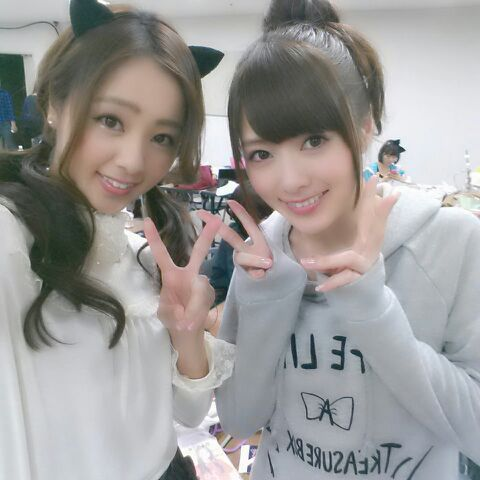
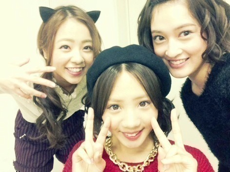

まぃゃん まぃゃん まぃゃんゃん ♪

皆さん こんにちわ〜(*´ω｀*)
ろってぃ-だよ〜 .
どんどんと 7thの制作が進んでおるの
いい感じだね.うきっ
昨日は朝早くからとある撮影をしていました！
夜眠れなくって一睡もせずに
撮影に行っちゃって・・・・
でもね、全然元気もりもりでした\(>ω<)/
楽ちかった あはん.
あらゆる所が筋肉痛になっちゃったよ
... チーン。>┼◯
撮影終わった後は 皆集まって
めざましライブのリハーサルをしました！
たくさん時間を貰えたので
ライブ楽しんで頂けるはずです(*´ω｀*)
地元大阪にいける・・・・ ウキウキ。♪
ーーーーーーーーーーーーーーーーーー
握手会の日 今月お誕生日の
せっちゃん と あみ のお祝いを
皆さんがやってくださり
それに、まぁいつもね 一緒におりまするまひろがね、参加しましたのよ(*´ω｀*)
あははん
写真係としてね、
皆さんと せっちゃん あみを
パシャり撮らせて頂きました〜
ありがと〜(*´ω｀*)
終わってから ３人でもパシャり。

いい笑顔だ . お気に入り ぃやん(/-＼*)笑
ぢゃあねぇ〜ん おやすみなちゃい.のし